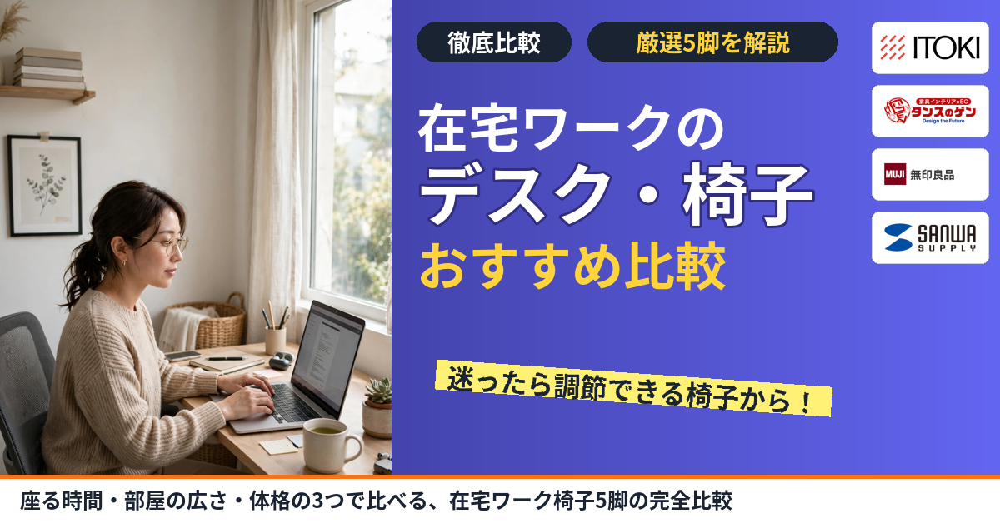

在宅ワークのデスク・椅子おすすめ比較【2026年11月】椅子5脚を徹底比較


こんにちは、デン太です。このページでは、在宅ワーク向けの椅子5脚を公式仕様で比べています。比べる軸は「調節できる箇所」「サイズと重さ」「耐荷重」の3つです。
在宅ワークの椅子選びで失敗しやすいのは、見た目や価格だけで決めてしまい、座面の高さ、肘掛けの形、本体の重さが自分の体や部屋に合わないことです。この記事では、比べる軸を「調節できる箇所の数」「サイズと重さ」「耐荷重とキャスター」の3つにそろえ、各社公式サイトの仕様をもとに在宅ワーク向けの椅子5脚を比較します。各椅子の基本情報、向いている人と合わない人、部屋の広さ別の選び方、よくある質問までをまとめました。価格は変わりやすいため、公式価格を確認できたものだけを明記し、それ以外は公式サイトで当日の価格を確認する形にしています。
イトーキ サリダYL7R：ヘッドレスト・肘・腰・座面の奥行・背もたれの角度まで細かく調節でき、長時間の在宅作業でも体に合わせ込みやすい1脚です。
- 背中までしっかり支えたいなら：タンスのゲン 腰楽メッシュチェア
- 部屋になじむシンプルさを重視するなら：無印良品 ワーキングアームチェア
- デスク下に収めて部屋を広く使いたいなら：タンスのゲン 跳ね上げ肘チェア
- 狭い場所や予備の椅子なら：サンワサプライ OAチェア SNC-A1
在宅ワークにおすすめの椅子5選を早見表で比較
まずは5脚の違いを一覧で確認しましょう。目的と部屋の広さから、気になる椅子を2〜3脚に絞るのがおすすめです。
| 目的 | 商品名 | 向いている人 | 主な特徴 |
|---|---|---|---|
| 長時間作業を快適に | イトーキ サリダYL7R | 1日の大半を座って過ごす人 | ヘッドレスト付き。背もたれは4段階で固定でき、座面の奥行も調節できる |
| 背中まで支えたい | タンスのゲン 腰楽メッシュチェア | 体格が大きめで、背中全体を預けたい人 | 高さ107〜114cmのハイバック。耐荷重約120kg |
| 部屋になじませたい | 無印良品 ワーキングアームチェア | リビングや寝室の一角で働く人 | 背メッシュ。肘は4段階に調節でき、取り外しも可能 |
| デスク下に収めたい | タンスのゲン 跳ね上げ肘チェア | 仕事が終わったら片づけたい人 | 跳ね上げ式の肘掛け。約9kgと軽量 |
| 狭い場所・予備用に | サンワサプライ OAチェア SNC-A1 | 限られたスペースで使う人 | W520×D520mm、重量7.3kgのコンパクト設計 |
※横にスクロールできます。並び順は優劣ではなく、目的別のおすすめ順です。

ポイントは、座る時間の長さで候補が変わることです。長く座るほど、調節できる箇所の数が効いてきます。
在宅ワークの椅子はどう選ぶ？失敗しない3つの基準
在宅ワークの椅子は、オフィスと違って部屋の広さや床の状態に左右されます。次の3つの基準で、自分の状況に合うかを確かめましょう。
基準1：座る時間が長いなら「調節できる箇所の数」を見る
たとえばイトーキ サリダYL7Rは、ランバーサポート（腰を支えるパーツ）を4cmの範囲で5段階に調節できます。座面の奥行も5.5cmの範囲で6段階に変えられます。背もたれは最大26°まで傾き、102°・111°・120°・128°の4段階で固定できます。座る時間が長い人ほど、こうした調節箇所の数が効いてきます。
基準2：部屋が狭いなら「サイズ・重さ・肘掛けの形」を見る
5脚の本体重量を比べると、サンワ OAチェア SNC-A1が7.3kg、タンスのゲン 跳ね上げ肘チェアが約9kgと軽めです。反対にイトーキ サリダYL7Rは16.5kg、タンスのゲン 腰楽メッシュチェアは約15kgあります。肘掛けが跳ね上げ式や取り外し式なら、デスク下に収める使い方もできます。
基準3：体格と床を守りたいなら「耐荷重・キャスター」を見る
体格に不安がある場合は、耐荷重の表示を必ず確認しましょう。今回の5脚では、タンスのゲン 腰楽メッシュチェアが約120kg、タンスのゲン 跳ね上げ肘チェアが約100kg、サンワ OAチェア SNC-A1が総耐荷重80kgです。フローリングで使う場合は、床を傷つけにくいPUキャスターかどうかも見ておきましょう。
長時間の在宅ワークにおすすめの椅子は？
長く座る人向けの基準（ランバーサポート・肘掛け・座面の高さ）は、疲れない椅子の選び方で詳しく解説しています。
1位 イトーキ サリダYL7R｜長時間作業を快適に

| 本体サイズ | W655×D670×H1080〜1180mm（ヘッドレスト付きタイプ） |
| 座面高 | 約43〜53cm（10cmの範囲で上下） |
| ヘッドレスト | 9段階（最大19cm）の高さ調節＋2か所の首振り調節 |
| 腰の支え | ランバーサポートを4cmの範囲で5段階に調節 |
| 座面奥行 | 5.5cmの範囲で6段階に調節 |
| 背もたれ | 最大26°まで傾き、102°・111°・120°・128°の4段階で固定 |
| 肘掛け | 上下7段階、左右の角度は最大36°、前後は5cm（10段階） |
| 本体重量 | 16.5kg |
| 保証 | 最大3年（外観・表面仕上げ1年、機構部・可動部2年、構造部材3年） |
| 価格 | 29,900円（税込）※2026年11月25日に公式発表資料で確認 |
向いている人：1日6時間以上座り、肘・腰・背もたれを細かく合わせたい人
良い点：調節できる箇所がこの5脚で最も多く、頭・腰・肘・座面の奥行まで自分の体に合わせ込めます。座面は厚さ5.3cmのモールドウレタンで、型崩れしにくい素材です。
気になる点：本体重量が16.5kgあり、掃除のたびに動かす使い方には向きません。サイズも大きめなので、置き場所の幅と奥行を先に測っておきましょう。
イトーキ公式サイトで詳細を見る公式サイトへの通常リンクです2位 タンスのゲン 腰楽メッシュチェア｜背中まで支えたい

| タイプ | ハイバック（G-AIR） |
| 外寸 | 幅64〜66×奥行64〜66×高さ107〜114cm |
| 座面高 | 45〜52cm |
| 肘掛け | 固定式アーム（高さ64〜71cm）。可動式も選択可 |
| 腰の支え | 腰楽ランバーサポート付き |
| 本体重量 | 約15kg |
| 耐荷重 | 約120kg |
| キャスター | PUキャスター（床を傷つけにくい素材） |
| 価格 | 公式通販サイトで当日の価格を確認 |
向いている人：体格が大きめで、背中全体を支えたい人。耐荷重に余裕がほしい人
良い点：耐荷重約120kgはこの5脚で最も大きく、体格に余裕を持って選べます。ハイバックとランバーサポートで、背中から腰までを預ける座り方ができます。
気になる点：肘掛けは基本が固定式のため、デスク天板の下に肘が当たらないか確認が必要です。座面の最低高さが45cmなので、小柄な人は足が浮かないかを見ておきましょう。
タンスのゲン公式サイトで詳細を見る公式サイトへの通常リンクです部屋が狭い・おしゃれに置きたい人向けの在宅ワーク椅子
狭い部屋での置き方と、小柄な人向けの座面高の目安は狭い部屋・小柄な人向けの選び方にまとめています。
3位 無印良品 ワーキングアームチェア｜部屋になじませたい

| 本体サイズ | W65×D66×H89〜98.5cm |
| 座面高 | 43〜53.5cm |
| 肘掛け | 座面から18〜25cmの範囲で4段階に調節、取り外し可能 |
| 背もたれ | 背メッシュ（通気性を考えた素材） |
| 本体重量 | 11.2kg（販売店の仕様欄による） |
| 価格 | 9,990円（税込）※2026年11月25日に公式ストアで確認 |
向いている人：リビングや寝室の一角で働き、部屋の雰囲気を崩したくない人
良い点：飾らない見た目で生活空間になじみやすく、肘掛けは高さを変えられるうえに取り外しもできます。背メッシュで蒸れにくい点も在宅ワーク向きです。
気になる点：ヘッドレストはなく、背もたれの角度や腰の支えを細かく調節する仕組みもありません。頭や腰まで支えたい人はサリダYL7Rと比べてください。
無印良品公式サイトで詳細を見る公式サイトへの通常リンクです4位 タンスのゲン 跳ね上げ肘チェア｜デスク下に収めたい

| 外寸 | 幅61×奥行57×高さ82.5〜90cm |
| 座面高 | 42.5〜50cm |
| 肘掛け | ロータリーアーム（跳ね上げ式） |
| 本体重量 | 約9kg |
| 耐荷重 | 約100kg |
| キャスター | PUキャスター（床を傷つけにくい素材） |
| その他 | 背面ポケット、ロッキング機能つき |
| 価格 | 公式通販サイトで当日の価格を確認 |
向いている人：仕事終わりに椅子を片づけたい人。椅子をよく動かす人
良い点：約9kgと軽く、肘掛けを跳ね上げればデスク下にすっと収められます。仕事と生活の場所を分けたいワンルームで扱いやすい形です。
気になる点：背もたれは低めで、背中全体や頭まで預ける座り方はできません。耐荷重は約100kgのため、余裕が必要な場合は腰楽メッシュチェアと比べてください。
タンスのゲン公式サイトで詳細を見る公式サイトへの通常リンクです5位 サンワサプライ OAチェア SNC-A1｜狭い場所・予備用に

| 本体サイズ | W520×D520×H720〜810mm |
| 座面高 | 約38.5〜47.5cm |
| 本体重量 | 7.3kg |
| 総耐荷重 | 80kg |
| 機能 | ガス圧リフト、背もたれチルト・前後調節 |
| 価格 | 10,450円（税込・メーカー参考価格）※2026年11月25日に公式サイトで確認 |
向いている人：限られたスペースに作業場所を作りたい人。予備の椅子がほしい人
良い点：この5脚で最も小さく軽い椅子です。座面高の下限が約38.5cmと低いので、低めのデスクや小柄な人にも合わせやすくなっています。
気になる点：肘掛けやヘッドレストはなく、機能は最小限です。1日中座る人や、耐荷重に余裕がほしい人には向きません。総耐荷重80kgを必ず確認してください。
サンワサプライ公式サイトで詳細を見る公式サイトへの通常リンクです機能で横並び比較｜座面・ランバー・アームの調整機能
「疲れにくさ」に直結する調整機能だけを抜き出して、5脚を横並びにしました。調節できる箇所が多いほど体に合わせ込みやすくなります。
| 商品名 | 座面 | 座面の高さ | 座面の前後（奥行）調節 | ヘッドレスト | ランバーサポート | アームレストの調整機能 | フットレスト |
|---|---|---|---|---|---|---|---|
| イトーキ サリダYL7R | モールドウレタン | 43〜53cm | あり（5.5cm・6段階） | あり（9段階） | あり（5段階調節） | 3D（上下・前後・左右） | なし |
| タンスのゲン 腰楽メッシュチェア | ウレタン（背はメッシュ） | 45〜52cm | なし | なし（ハイバック） | あり | 固定式（可動式も選択可） | なし |
| 無印良品 ワーキングアームチェア | ウレタンフォーム | 43〜53.5cm | なし | なし | なし | 高さ4段階・取り外し可 | なし |
| タンスのゲン 跳ね上げ肘チェア | ウレタンフォーム | 42.5〜50cm | なし | なし | なし | 跳ね上げ式 | なし |
| サンワサプライ OAチェア SNC-A1 | ウレタンフォーム | 約38.5〜47.5cm | なし | なし | なし | なし | なし |
※横にスクロールできます。各社公式サイトの仕様（2026年11月25日確認）をもとに作成。
採点つき比較表｜評価基準を明記して比べる
採点は編集部の独自評価です。各項目5点満点で、根拠は公開されている仕様の数値に限っています。座り心地そのものは体格や好みで変わるため、点数は候補を絞るための目安として使ってください。
| 商品 | 調節のしやすさ | 狭い部屋への置きやすさ | 耐荷重・床への配慮 | 総合点 |
|---|---|---|---|---|
| イトーキ サリダYL7R | 4.9 | 3.6 | 4.4 | 4.6 |
| タンスのゲン 腰楽メッシュチェア | 3.8 | 3.4 | 4.8 | 4.2 |
| 無印良品 ワーキングアームチェア | 4.0 | 4.0 | 3.8 | 4.0 |
| タンスのゲン 跳ね上げ肘チェア | 3.6 | 4.6 | 4.0 | 3.9 |
| サンワサプライ OAチェア SNC-A1 | 3.2 | 4.9 | 3.2 | 3.7 |
用途別の比較表｜部屋の広さと座る時間で選ぶ
| 用途 | 候補 | 理由 |
|---|---|---|
| 1日6時間以上座る | イトーキ サリダYL7R | ヘッドレスト、肘、腰、座面奥行、背もたれ角度まで調節可能 |
| 背中まで支えたい | タンスのゲン 腰楽メッシュチェア | 高さ107〜114cmのハイバック、耐荷重約120kg |
| 部屋になじませたい | 無印良品 ワーキングアームチェア | 背メッシュで見た目が軽く、肘は取り外しも可能 |
| 片づけやすさ重視 | タンスのゲン 跳ね上げ肘チェア | 約9kgと軽く、肘を上げればデスク下に収めやすい |
| 狭い場所・予備用 | サンワサプライ OAチェア SNC-A1 | W520×D520mm・7.3kgで最も小さい |
椅子とあわせて、デスク・収納もまとめて探す
椅子を替えるタイミングは、デスクや収納を含めた作業場所全体を見直す良い機会です。オフィス家具をまとめて探すならオフィスコム、価格帯を抑えた家具を探すなら家具350が候補になります。個別商品の価格は日によって変わるため、各サイトで当日の価格・送料・サイズを確認してください。
オフィスコムで家具を探すオフィス家具の通販サイトへ 家具350で家具を探す価格帯を抑えた家具の通販サイトへ在宅ワークの椅子選びでよくある質問
Q1. 在宅ワークの椅子を初めて買うなら、どれがおすすめですか？
長時間座るならイトーキ サリダYL7Rです。ヘッドレスト、肘、腰、座面の奥行、背もたれの角度まで調節でき、体に合わせ込みやすいからです。背中まで支えるシンプルな椅子がよければ、タンスのゲン 腰楽メッシュチェアも候補になります。
Q2. ワンルームなど狭い部屋に置くならどれですか？
最も小さく軽いのはサンワ OAチェア SNC-A1（W520×D520mm、7.3kg）です。肘掛け付きがよければ、跳ね上げ式の肘でデスク下に収めやすいタンスのゲン 跳ね上げ肘チェアが使いやすいでしょう。
Q3. 体格が大きめでも使える椅子はありますか？
今回の5脚のうち耐荷重の表示を確認できたものでは、タンスのゲン 腰楽メッシュチェアの約120kgが最も大きい数値です。購入前に、各商品の耐荷重表示を必ず確認してください。
Q4. フローリングの床が傷つかないか心配です。
タンスのゲンの2脚はPUキャスターを採用しています。それでも心配な場合は、チェアマットを敷くなど床の保護を併用すると安心です。
Q5. 肘掛けは付いていたほうがいいですか？
キーボード作業が長いなら、肘の高さを合わせられる肘掛けがあると便利です。ただし、デスクに当たって椅子を引き込めないこともあります。無印良品 ワーキングアームチェアのように取り外せるタイプや、タンスのゲン 跳ね上げ肘チェアのように跳ね上げられるタイプなら、状況に応じて使い分けられます。
Q6. 保証期間が長い椅子はどれですか？
イトーキ サリダYL7Rは最大3年の保証があります。外観の表面仕上げが1年、機構部・可動部が2年、構造部材が3年です。
Q7. デスクや収納も一緒に探したい場合はどうすればいいですか？
家具通販サイトでまとめて比べる方法があります。この記事では、オフィスコムと家具350を紹介しています。個別商品の価格は変わりやすいため、各サイトで当日の価格、送料、サイズを確認してください。
Q8. 椅子の価格はなぜ一部しか書かれていないのですか？
価格はセールや在庫で変わりやすく、公式に確認できたものだけを明記しているためです。タンスのゲンの2脚は公式通販で価格が変動するので、この記事では断定せず、公式サイトで当日の価格を確認する形にしています。

まとめです。まずはデスクの高さと置き場所を測って、早見表から候補を2脚に絞るところから始めてみてください。
まとめ：在宅ワークにおすすめの椅子は働き方に合わせて選ぼう
在宅ワークの椅子選びは、座る時間、部屋の広さ、体格の3つで考えると迷いにくくなります。長時間作業ならイトーキ サリダYL7R、背中まで支えたいならタンスのゲン 腰楽メッシュチェア、部屋になじむ形なら無印良品 ワーキングアームチェア、片づけやすさならタンスのゲン 跳ね上げ肘チェア、狭い場所や予備用ならサンワ OAチェア SNC-A1が候補です。まずはデスクの高さと置き場所を測り、早見表から候補を2脚に絞るところから始めてみてください。予算からの絞り込みは価格帯別ガイドも参考にしてください。
椅子とあわせて、デスク・収納もまとめて探す
椅子を替えるタイミングは、デスクや収納を含めた作業場所全体を見直す良い機会です。オフィス家具をまとめて探すならオフィスコム、価格帯を抑えた家具を探すなら家具350が候補になります。個別商品の価格は日によって変わるため、各サイトで当日の価格・送料・サイズを確認してください。
オフィスコムで家具を探すオフィス家具の通販サイトへ 家具350で家具を探す価格帯を抑えた家具の通販サイトへ関連記事
更新履歴
2026年11月25日：初版を作成しました。仕様と価格は同日に各社公式サイト（イトーキ公式ニュースルーム、タンスのゲン公式本店、無印良品公式ストア、サンワサプライ公式サイト）で確認した内容に基づきます。